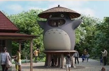
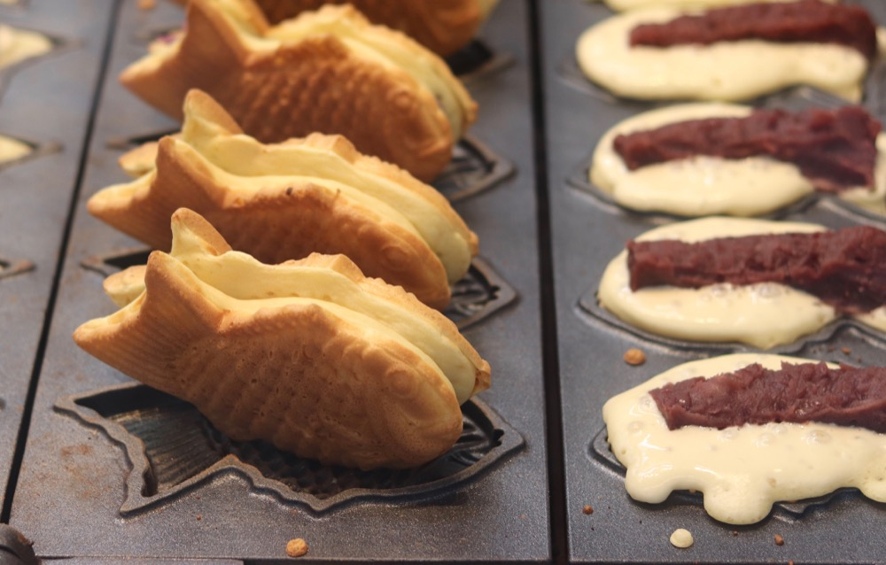
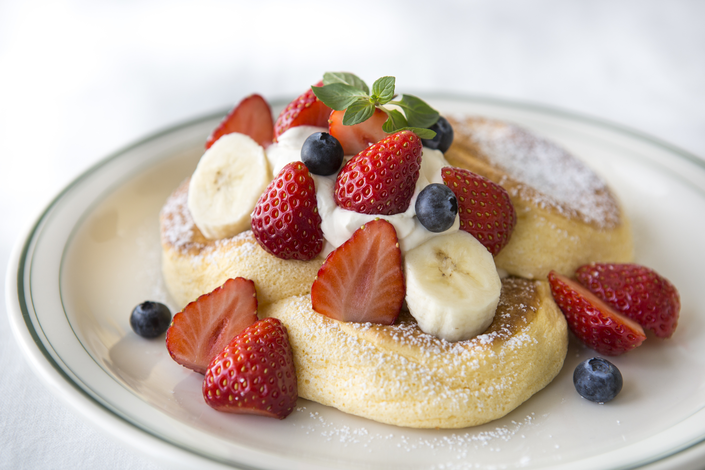

Jour 5 : Découverte Technologique
Programme de la journée
- Musée Studio Ghibli
- Restaurant le midi
- le soir: Akihabara
Activité / Nourriture
Musée Studio Ghibli

Totoro

Hayao Miyazaki

Le château dans le ciel
Nourriture

Bungeoppang

Fluffy pancakes

okonomiyaki
Akihabara
Découverte du quartier
- Centre de la culture geek
- Magasins électroniques
- Cafés manga
- Budget estimé : 5 000 yens (~30 euros)
- Localisation : Quartier de Shibuya
Akihabara
Dépense Total
Dépense du jour
- Musée : 300€
- Nourriture midi: 93,75€
- Nourriture soir : ~82€ (nourriture sur place)
- activité du soir : 5 000 yens (30€)
Total de la journée: 475,75€
Budget restant : 10 131,41€ (~1 621 025,6¥)